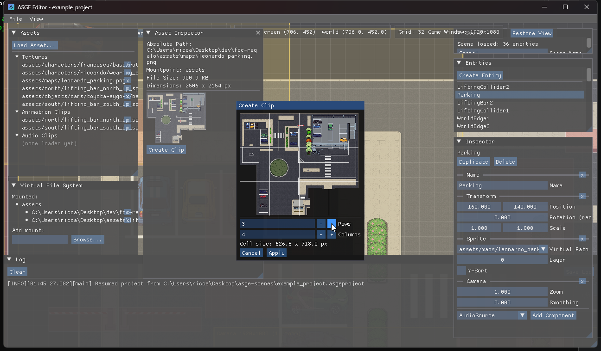
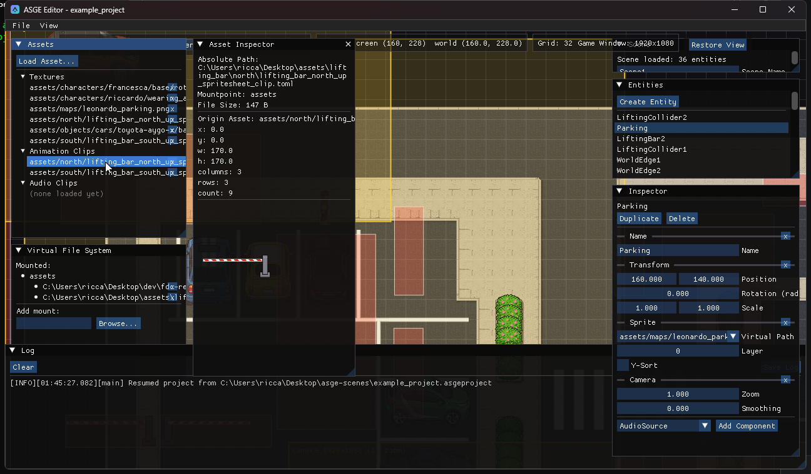

Animate a sprite
Turn a spritesheet into something an Animation component can play, without an external tool or hand-written TOML.

Steps
- Open the spritesheet texture in the Asset Inspector and click Create Clip.
- In the modal, set Rows and Columns. A bigger thumbnail shows a live grid overlay and the computed per-cell pixel size.
- Click Apply. The editor writes
<image>_clip.tomlnext to the texture (creating or overwriting it), then registers and selects it as a new animation clip. - Add an
Animationcomponent to an entity, choose the clip path and frame duration, and press Play.

A clip records which texture it slices (m_OriginAsset), so once one exists the texture's button becomes Open Clip and jumps straight to it. Importing a .toml by hand via Load Asset... that doesn't identify its own texture this way is rejected rather than imported half-configured.
Previous: Add a collider · Next: Make an entity follow a path.